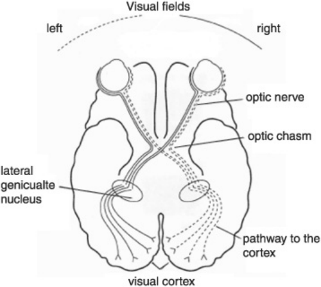
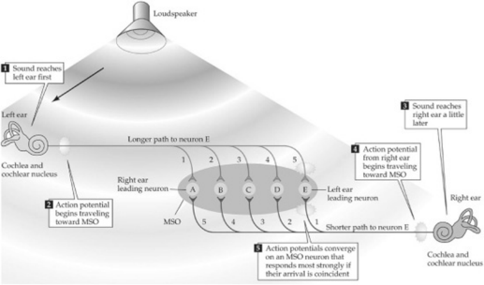

Chương 5: Cảm Nhận, Tri Giác Và Hành Động
Khiếm Khuyết Của Tri Giác Cảm Giác
Thông tin sensory (cảm giác) chảy vào brain (não bộ) tiếp nhiên liệu cho các perception (tri giác), memory (trí nhớ), ý định và hành động của chúng ta. Dù chúng ta thường chỉ nhắc đến năm giác quan truyền thống – thị giác, xúc giác, thính giác, vị giác và khứu giác – trên thực tế còn có nhiều giác quan hơn thế. Các cảm giác khác bao gồm nóng và lạnh, trọng lực, gia tốc, đau, v.v. Hơn nữa, mỗi phương thức cảm giác truyền thống đều là một hỗn hợp phức tạp của các giác quan con khác biệt rõ rệt. Chẳng hạn, trong phương thức thị giác, ta có khả năng cảm nhận chuyển động, màu sắc, hình dạng, độ sáng, kết cấu và độ tương phản của các vật thể.
Bộ não phân tích các cảm giác sơ cấp, biến chúng thành những tri giác mà từ đó đưa ra các quyết định sáng suốt về hành động tương lai. Tuy nhiên, cảm giác chỉ là một thành phần đóng góp vào tri giác. Có thể tri giác được cái không được cảm nhận, không tri giác được cái được cảm nhận, và dựng lên nhiều hơn một tri giác từ cùng một cảm giác. Vì vậy, tri giác không bị cảm giác quyết định chặt chẽ, và tri giác cảm giác cũng không gắn liền với một phương thức đơn lẻ. Tri giác là những phán đoán có học thức của bộ não về điều mà các giác quan kết hợp đang nói với nó, và vì thế chúng gần như luôn phụ thuộc vào sự tương tác giữa các phương thức khác nhau. Cho nên, dù việc phân biệt giữa cảm giác và tri giác có vẻ mang tính hàn lâm, thực ra đây là một sự phân biệt quan trọng.
Sự phân biệt này dễ dàng được nhận ra khi nhìn vào ảo ảnh thị giác nổi tiếng dựa trên bức tranh có tên My Wife and Mother-in-Law của W. E. Hill. Bạn sẽ thấy hoặc một người phụ nữ trẻ quay mặt đi, hoặc hình ảnh nghiêng của một bà cụ: hai tri giác cùng chứa trong một bức tranh. Sau khi cả hai đã được tri giác, bạn có thể chuyển đổi qua lại giữa chúng theo ý muốn. Thông tin cảm giác rơi lên retina (võng mạc) hoàn toàn giống nhau trong cả hai trường hợp, nên phải có một quá trình top-down (từ trên xuống) quyết định cách hệ thống tri giác giải mã đầu vào cảm giác. Thực tế, bộ não của chúng ta áp đặt những tri giác có ý thức khác nhau lên cùng một thông tin được các hệ thống cảm giác ghi nhận.

Hình 11 — Hai tri giác từ một cảm giác.
Tầm quan trọng của sự tương tác giữa các giác quan đối với tri giác được minh họa bằng ảo ảnh thính–thị giác gọi là McGurk effect (hiệu ứng McGurk), do Harry McGurk và John MacDonald mô tả trong một bài báo có tên ‘Hearing Lips and Seeing Voices’. Việc xem một đoạn video về một người lặp lại âm tiết ‘dah’ ba lần, rồi lặp lại ba lần âm tiết ‘bah’, có thể tạo ra ảo ảnh này. Nếu âm thanh trong video lặp lại âm ‘dah’, bất kể âm tiết thực sự được mím môi là gì, bạn vẫn nghe thấy cả ‘dah’ lẫn ‘bah’. Khi bạn thấy môi mím âm ‘bah’, bạn nghe thấy ‘bah’ dù âm thanh vào tai thực tế là ‘dah’. Bộ não của bạn đang cố cung cấp cho ý thức phán đoán tốt nhất của mình về những gì các giác quan đang nói. Trong trường hợp này có một mâu thuẫn giữa điều mắt và tai bảo nó tri giác. Ở đây, mắt đã thắng.
Mù tri giác là một ví dụ nổi bật về cách bộ não mang tính chọn lọc cao trong việc quyết định yếu tố nào của thông tin cảm giác sẵn có được tri giác một cách có ý thức. Một minh họa đặc biệt súc tích được cung cấp bởi một đoạn video ngắn do Daniel Simons và Christopher Chabris thực hiện. Video cho thấy một nhóm người trẻ chuyền bóng rổ cho nhau. Một người mặc bộ đồ gorilla đi vào giữa họ, vẫy tay rõ mồn một về phía camera, rồi đi ra khỏi khung hình. Trước khi xem video, khán giả được hướng dẫn đếm số lần chuyền bóng, rồi báo cáo kết quả sau khi đoạn phim kết thúc. Điều đáng kinh ngạc là, khi tôi xem cuộc trình diễn này gần đây, khoảng một nửa khán giả hoàn toàn không nhận ra con gorilla! Nhưng con gorilla vô hình vẫn ở đó, hình ảnh của nó đi vào mắt của từng người xem, khắc sâu vào võng mạc của họ, được gửi đến thalamus (đồi thị), rồi từ đó chuyển tiếp đến vỏ não thị giác chính. Vậy con gorilla nặng 900 pound kia đã đi đâu? Có vẻ bộ não đã mải mê với nhiệm vụ đếm đến mức quyết định không bận tâm tạo ra một tri giác có ý thức về con gorilla, dù một phần đáng kể của hệ thống thị giác trong não đã được thông báo đầy đủ về sự hiện diện của nó. Vì thế, con gorilla thực chất bị tẩy xóa khỏi tri giác thị giác như thể bằng một công cụ chỉnh ảnh.
Cách bộ não có thể thực hiện được kỳ công thao túng hình ảnh như vậy nằm ngoài hiểu biết hiện tại của chúng ta. Nhiệm vụ này hẳn phải liên quan đến nhiều hơn là chỉ loại bỏ thông tin thị giác liên quan đến con gorilla, bởi hình ảnh con gorilla không bị thay thế bằng một lỗ hổng hình dạng gorilla trong tầm nhìn. Khoảng không gian mà con gorilla chiếm giữ được lấp đầy một cách phù hợp bằng những gì lẽ ra đã thấy được ở phía sau nó nếu con gorilla thực sự không hiện diện ở đó. Điều đáng chú ý không kém là những người chứng kiến sự vô hình của con gorilla không thể nhớ lại bất cứ điều gì bất thường về tri giác của họ đối với đoạn video gốc. Rõ ràng đã không có dấu vết trí nhớ nào có thể truy cập được để lại từ trường hợp kỳ lạ của con gorilla biến mất. Ví dụ này nên khiến chúng ta hoài nghi về tính xác thực của những lời kể từ nhân chứng trong những tình huống mà độ chính xác lại quan trọng, chẳng hạn như trong việc báo cáo tội phạm.
Các giác quan của con người chúng ta nghèo nàn khi so sánh với ở loài vật khác. Chẳng hạn, một con bướm đực khi tìm bạn tình có thể đáp ứng với ‘mùi’ của từng phân tử pheromone (chất hấp dẫn giới tính) do con cái tiết ra không khí để lôi kéo bạn tình ở xa. Mắt chúng ta chỉ nhạy với các bước sóng trong phổ điện từ từ khoảng 400 đến 700 nanomet. Nhiều côn trùng đáp ứng với các bước sóng ngắn hơn, cho phép chúng dùng thông tin chứa trong ánh sáng cực tím. Những loài vật khác, chẳng hạn một số loài rắn, có thể ‘nhìn’ nhiệt cơ thể của con mồi nhờ bước sóng dài của bức xạ hồng ngoại. Thính giác của chúng ta cũng bị giới hạn trong một dải tần số hẹp. Tốt nhất chúng ta chỉ nghe được âm thanh lên đến khoảng 20 kHz, kém xa tần số siêu âm mà dơi dùng để định vị vật cản và con mồi bằng tiếng vang.
Tri Giác Thế Giới Bên Ngoài
Mở mắt ra và bạn thấy thế giới quanh mình dường như ngay lập tức, đầy màu sắc với độ chi tiết phi thường về thời gian và không gian. Chỉ một cái liếc cũng cho phép bạn nhận ra các vật thể – màu sắc, hình dạng, kết cấu, kích thước, vị trí và mối quan hệ không gian giữa chúng với nhau hiện ra ngay lập tức. Nếu một vật thể chuyển động so với bạn, bạn có thể lập tức nhận biết hướng chuyển động và ước tính tốc độ của nó, những thông tin giúp bạn tránh va chạm với nó hoặc bắt lấy nó. Nếu chính bạn đang chuyển động, bạn thấy sự trôi chảy của thế giới thị giác quanh mình và trích xuất thông tin từ đó, giúp bạn biết hướng đi, ước tính tốc độ, và đồng thời điều chỉnh cả hai.
Nhìn thấy phụ thuộc vào việc retina (võng mạc) cung cấp thông tin đã được xử lý cao độ về chất và lượng ánh sáng được thu lại bởi các tế bào que và tế bào nón, hai hệ thống photoreceptor (thụ thể ánh sáng). Các tế bào nón tập trung rất dày ở fovea (điểm vàng), một vùng chỉ rộng một milimet vuông ở phía sau võng mạc. Vùng này chịu trách nhiệm về thị giác màu độ sắc nét cao của chúng ta và có thể được coi đúng đắn là milimet vuông quan trọng nhất trong cơ thể bạn. Có các tế bào nón nhạy với màu đỏ, xanh lá cây và xanh dương, và chúng cung cấp thông tin về tỷ lệ tương đối của ánh sáng đỏ, xanh dương và xanh lá cây mà bộ não dùng để ‘tô màu’ cho một vật thể. Vì thế, bộ não tạo ra tất cả màu sắc mà ta tri giác được bằng cách trộn chỉ ba màu, cũng giống như họa sĩ có thể pha bất kỳ màu nào từ chỉ ba chất màu. Vì các tế bào nón khá không nhạy với ánh sáng, thị giác màu chỉ khả thi trong ánh sáng tương đối sáng. Ở phần lớn bề mặt võng mạc, bao quanh điểm vàng, các thụ thể ánh sáng dạng que cực kỳ nhạy sáng chiếm ưu thế, nhiều hơn tế bào nón khoảng 10 trên 1.
Ánh sáng điều hòa lượng neurotransmitter (chất dẫn truyền thần kinh) do các tế bào que và nón giải phóng, rồi đến lượt nó điều hòa hoạt động điện của các neuron (tế bào thần kinh) trong võng mạc. Trong số đó có các tế bào thần kinh lưỡng cực truyền thông tin dọc theo đường đi của ánh sáng, và các tế bào thần kinh ngang cùng tế bào thần kinh amacrine truyền thông tin ngang trong võng mạc – vuông góc với đường đi của ánh sáng. Những tế bào thần kinh cuối cùng chịu ảnh hưởng là các tế bào hạch võng mạc, những tế bào đầu ra của võng mạc mà axon (sợi trục) của chúng tạo thành các dây thần kinh thị giác nối mắt với não bộ.

Hình 12 — Mắt và võng mạc. Ánh sáng đi vào mắt phải xuyên qua hai lớp tế bào thần kinh trong võng mạc trước khi đến các thụ thể ánh sáng nhạy sáng – tế bào que và tế bào nón. Sau đó, thông tin về chất lượng ánh sáng được truyền ngược trở lại các tế bào thần kinh, và chúng tích hợp, biến đổi thông tin ấy thành một mô hình xung động để một triệu tế bào hạch võng mạc truyền đến não bộ.
Mắt bạn hoạt động trên một phạm vi cường độ ánh sáng khổng lồ, từ đêm đầy sao đến ngày nắng chói nhất – có thể chênh lệch độ sáng đến một triệu lần. Điều này đạt được nhờ một đặc tính của các thụ thể ánh sáng gọi là adaptation (thích ứng), giúp điều chỉnh độ nhạy của chúng cho khớp với cường độ ánh sáng nền trung bình. Trong ánh sáng rất mờ, độ nhạy của tế bào que tăng lên, còn trong ánh sáng chói thì độ nhạy của chúng giảm đi. Ở bất kỳ mức độ nhạy nào, tế bào que báo cáo đáng tin cậy sự khác biệt về cường độ ánh sáng trong một phạm vi hẹp phía trên và phía dưới mức nền trung bình. Vì thế, các thụ thể ánh sáng rất nhạy với những thay đổi nhỏ về cường độ ánh sáng so với nền, nhưng không nhạy với cường độ tuyệt đối. Nếu mức chiếu sáng nền tổng thể thay đổi đột ngột, như khi ta bước vào rạp chiếu phim vào một ngày nắng chói, ta thực sự bị mù cho đến khi các thụ thể dạng que thích ứng với cường độ giảm bằng cách tăng độ nhạy của chúng. Việc đặt lại độ nhạy phụ thuộc vào sự huy động các cơ chế sinh hóa trong thụ thể ánh sáng và có thể mất vài phút để hoàn tất đối với một thay đổi rất lớn về cường độ ánh sáng. Hệ quả của sự thích ứng ánh sáng là bộ não không được thông báo về mức độ sáng tuyệt đối, mà về thông tin hữu ích hơn nhiều về sự khác biệt cục bộ về độ sáng và độ tương phản, bất kể độ sáng tổng thể.
Thông tin từ mắt truyền đến não bộ dưới dạng các chuỗi xung thần kinh do sợi trục của các tế bào hạch võng mạc mang theo. Mỗi tế bào hạch có một góc nhìn riêng về thế giới thị giác, gọi là receptive field (trường tiếp nhận) của nó. Đây là một vùng nhỏ, đại loại hình tròn, của thế giới mà ánh sáng từ đó có thể ảnh hưởng đến hoạt động điện của một tế bào hạch cụ thể. Có số lượng đại tương đương của hai loại trường tiếp nhận khác nhau ở tế bào hạch võng mạc: loại bị kích thích bởi sự tăng cường độ sáng ở trung tâm trường tiếp nhận của nó (tế bào hạch trung tâm ON), và loại bị kích thích bởi sự giảm cường độ ở trung tâm (trung tâm OFF). Bằng cách báo cáo tần số bắn tăng lên cho cả trường trung tâm ON lẫn trung tâm OFF, một tín hiệu đáng tin cậy hơn được tạo ra so với việc báo cáo phản ứng ON bằng tần số tăng và phản ứng OFF bằng tần số giảm từ một tần số bắn vốn đã thấp.
Thị giác là một quá trình thu thập thông tin chủ động – mắt lia lịa đi lại dưới sự chỉ đạo của não bộ. Như ta đã thấy, thị giác rõ nét chỉ khả thi khi điểm vàng soi xét một cảnh. Điều này tạo ra một cửa sổ rõ nét rất hạn chế, nên để tạo ra tri giác về một ‘bộ phim trong đầu’, mắt phải được di chuyển liên tục. Mắt chuyển động nhanh từ chỗ này đến chỗ khác, dừng lại ở đó một lát, cho phép não bộ chụp một ảnh chụp độ phân giải cao. Từ một số ảnh chụp liên tiếp ấy, não bộ dựng nên bức tranh của thế giới bên ngoài trong ‘con mắt của tâm trí’. Toàn bộ quá trình là một vòng phản hồi chủ động, trong đó võng mạc cung cấp thông tin cho não bộ, rồi não bộ đưa ra một phán đoán có học thức về những gì đang có ở ngoài kia và dựa trên cơ sở đó ra lệnh cho mắt di chuyển, làm thay đổi thông tin thị giác đang được cung cấp. Nhiều vùng não là cần thiết để thực hiện tất cả các nhiệm vụ tính toán cần thiết nhằm chuyển thông tin do mắt cung cấp thành sự phong phú của tri giác, tạo nên nhận thức điện ảnh về thế giới thị giác.
Đường đi từ mắt đến não bộ bắt đầu tại nơi các sợi trục của tế bào hạch võng mạc rời khỏi võng mạc để tạo thành dây thần kinh thị giác. Tại điểm này, gọi là optic disc (đĩa thị giác), không có tế bào thụ thể ánh sáng nào để các sợi trục của tế bào hạch đi ra. Vì thế mỗi đĩa thị giác không nhạy với ánh sáng, và điều này tạo ra cái gọi là ‘điểm mù’ trong trường thị giác của mỗi mắt. Các dây thần kinh thị giác tiến về não theo những đường cắt nhau và gặp nhau ở đáy của diencephalon (trung gian não) tại một điểm giao thoa gọi là optic chiasm (giao thoa thị giác), nơi định hướng các sợi thần kinh đến mục tiêu của chúng ở cùng phía hoặc phía đối diện của não. Ở người, khoảng 60 phần trăm sợi trục của tế bào hạch trong mỗi dây thần kinh thị giác bắt chéo tại giao thoa, hướng đến các mục tiêu ở phía đối diện của não, và 40 phần trăm còn lại được hướng đến các mục tiêu ở cùng phía. Vì vậy, ở phía não của giao thoa, các bó sợi trục tế bào hạch trái và phải, giờ gọi là các đường thị giác, bao gồm sợi thần kinh từ cả hai mắt.
Các sợi trục trong đường thị giác có nhiều mục tiêu trong não, trong đó quan trọng nhất đối với tri giác thị giác có ý thức là một vùng của đồi thị gọi là lateral geniculate nucleus (nhân geniculate bên). Các sợi trục của tế bào hạch võng mạc kết thúc ở nhân geniculate bên tạo synapse (khớp thần kinh) với các tế bào thần kinh khác và không đi sâu hơn vào não. Những tế bào thần kinh đã nhận thông tin thị giác từ các tế bào hạch tỏa ra khỏi đồi thị và đi thẳng đến vỏ não thị giác chính (còn gọi là vỏ não vân hay vùng V1).

Hình 13 — Đường thị giác: từ mắt đến vỏ não. Thông tin về thế giới thị giác bên trái được truyền sang phía phải của não và ngược lại. Vì các trường thị giác của hai mắt chồng lên nhau ở phía trước, sự phân chia này được thực hiện bằng cách sắp xếp các sợi trục của tế bào hạch võng mạc theo việc chúng nhìn vào trường thị giác bên trái hay bên phải. Vì thế, một số sợi trục từ mắt phải đi sang phía phải của não, số khác sang phía trái. Việc sắp xếp này xảy ra tại giao thoa thị giác. Các sợi trục võng mạc tiếp tục đi đến các nhân geniculate bên, nơi các khớp thần kinh đầu tiên được hình thành với các tế bào thần kinh thị giác trong não.
Điều quan trọng cần nhận ra là, ở nhân geniculate bên và ở vỏ não, các quan hệ không gian giữa các tế bào thần kinh trong võng mạc được duy trì. Vì vậy, những mục tiêu trong não của thông tin từ mắt chứa các biểu diễn dạng bản đồ của không gian thị giác. Cũng như hai mắt là một cặp, các nhân geniculate bên và các vùng vỏ não thị giác chính cũng là một cặp. Thông tin thị giác về phía bên trái được vẽ vào nhân geniculate bên phải và vỏ não thị giác phải, còn bản đồ của thế giới thị giác bên phải nằm ở các vùng mục tiêu bên trái. Vì các trường thị giác của hai mắt chồng lấn rộng rãi, trong cái gọi là binocular field (trường hai mắt), những vùng rộng lớn của trường thị giác bên trái được ‘nhìn’ bởi cả mắt trái lẫn mắt phải, và ngược lại. Vì thế, bản đồ thị giác ở phía bên phải của não biểu diễn phía bên trái của thế giới thị giác chứa các vùng hai mắt được tạo nên từ thông tin lấy từ cả hai mắt.
Trong nhân geniculate bên, các đầu vào thị giác từ mắt trái và mắt phải kết thúc ở các lớp khác nhau, nên các tế bào thần kinh chiếu lên vỏ não bị kích thích bởi đầu vào từ mắt này hoặc mắt kia, chứ không phải cả hai. Vì vậy, các tế bào thần kinh geniculate và các tế bào thần kinh vỏ não mà chúng kích thích trong vùng V1 của vỏ não là monocular (một mắt). Ở các giai đoạn sau của xử lý thông tin thị giác trong vỏ não, các đầu vào từ trường hai mắt của mắt trái và mắt phải hội tụ để tạo ra những tế bào thần kinh có hai trường tiếp nhận, một do mắt phải nhìn thấy và một do mắt trái nhìn thấy. Nhiều tế bào thần kinh như vậy bị kích thích tối đa khi đường dẫn thần kinh biểu diễn cùng một phần của thế giới thị giác ở cả mắt trái lẫn mắt phải được kích hoạt. Những tế bào thần kinh hai mắt khác lại bị kích thích khi các phần không tương ứng của trường thị giác trái và phải được kích thích bằng thị giác. Vì các tế bào thần kinh hai mắt này báo cáo thông tin về cùng một vùng hoặc vùng lân cận trong trường thị giác trái và phải, chúng có khả năng quan trọng trong việc tạo ra tri giác về chiều sâu khi cùng một vật thể được nhìn bằng cả hai mắt.

Hình 14 — Tổ chức dạng cột trong vỏ não thị giác chính. Một điện cực đi xuyên thẳng đứng qua vỏ não thị giác chính (hình bên trái) sẽ gặp các tế bào thần kinh có cùng hướng ưu tiên. Một điện cực di chuyển ngang hoặc chéo (bên phải) sẽ gặp một chuỗi tế bào thần kinh mà hướng ưu tiên của chúng thay đổi một cách có hệ thống. Trong lớp IV của vỏ não không có tế bào thần kinh chọn lọc hướng (được ký hiệu bằng các vòng tròn).
Trong vỏ não thị giác chính, các chi tiết đơn giản về đặc điểm của trường thị giác được phân tích. Đặc tính phản ứng và trường tiếp nhận của các tế bào thần kinh geniculate bên tương tự như của các tế bào hạch võng mạc. Nhưng các tế bào thần kinh vỏ não chính lại tương đối không đáp ứng với một điểm sáng nhỏ tăng hoặc giảm độ sáng ở trung tâm trường tiếp nhận của chúng – dù đây là kích thích hưng phấn rất hiệu quả đối với tế bào thần kinh geniculate và tế bào thần kinh võng mạc. Các phản ứng của tế bào thần kinh geniculate bên được tích hợp trong vỏ não để tạo ra khả năng đáp ứng cao với các cạnh hoặc thanh có độ tương phản sáng–tối lớn. Điều quan trọng là các tế bào thần kinh vỏ não chính đáp ứng tốt nhất với các thanh hoặc cạnh được trình bày ở một góc định hướng cụ thể trong trường tiếp nhận. Không chỉ các vùng kề nhau của thế giới thị giác chiếu đến các tế bào thần kinh kề nhau trong vỏ não, mà đặc tính phản ứng của các tế bào thần kinh chia sẻ cùng một vị trí trên bề mặt vỏ não thị giác cũng có phản ứng tương tự về chất đối với các kích thích thị giác. Có một tổ chức chức năng có hệ thống bên trong và trên khắp vỏ não. Chẳng hạn, các tế bào thần kinh bị kích thích bởi cùng một hướng tối ưu được tổ chức thành các cột thẳng đứng. Giữa các cột định hướng kề nhau có một sự dịch chuyển dần dần, có hệ thống về ưu tiên định hướng, sao cho tất cả các hướng quanh 360 độ đều được biểu diễn sau mỗi milimet hoặc hơn trong bản đồ thế giới thị giác ở vỏ não thị giác chính. Điều này đảm bảo rằng mọi phần của bản đồ thị giác trong vỏ não đều chứa các tế bào thần kinh bị kích thích bởi mọi hướng.
Thông tin thị giác đã được xử lý một phần giờ được hướng đến một số vùng khác của vỏ não liên quan đến thị giác. Trong các vùng thị giác extrastriatal (ngoài vùng vân) này, các bản đồ thị giác của thế giới thị giác bên ngoài được lặp lại nhiều lần. Có vẻ não bộ ưa thích việc các tế bào thần kinh riêng lẻ nhận thông tin về những vật thể kề nhau trong thế giới bên ngoài cũng ở gần nhau trong thế giới bên trong của vỏ não. Tại đây, những khía cạnh và đặc điểm phức tạp hơn được gán cho thông tin thị giác.
Khi sự tích hợp và xử lý thông tin thị giác tiến triển trong vỏ não, các đặc tính phản ứng có xu hướng trở nên phức tạp hơn. Chẳng hạn, một tế bào thần kinh vỏ não ở giai đoạn xử lý sớm có thể chỉ đáp ứng với một cạnh có hướng cụ thể được trình bày ở một vùng cụ thể của trường thị giác. Vì vậy, nhiều tế bào thần kinh tương tự là cần thiết để biểu diễn theo cách phân tán nhiều hướng tạo nên sự phức tạp của thế giới thị giác. Ở giai đoạn xử lý muộn hơn, các tế bào thần kinh có thể đáp ứng với một cạnh có hướng nhất định được trình bày ở bất kỳ đâu trong trường thị giác. Điều này gợi ý về một tổ chức phân cấp trong xử lý hình ảnh và nhận dạng vật thể bằng tế bào thần kinh ở vỏ não, một ý tưởng khi đẩy đến kết luận logic của nó đã dẫn đến đề ngữ kỳ quặc rằng trong não bạn có một tế bào thần kinh chỉ đáp ứng với bà nội của bạn (grandmother cell hypothesis – giả thuyết tế bào bà nội, một giả thuyết tai tiếng). Nhưng khó có khả năng các tri giác thị giác được xây dựng bằng cách xử lý tuần tự thông tin, từ các thanh có hướng, đến chiều sâu, chuyển động, thêm màu sắc, nhận dạng hình dạng vật thể, vị trí vật thể, hướng và tốc độ chuyển động, kết cấu, v.v. Mỗi thành phần của thị giác này được xử lý riêng biệt và ở các phần khác nhau của vỏ não thị giác chính và vỏ não thị giác ngoài vân. Chỉ mất một phần nhỏ giây để nhận ra một khuôn mặt hay vật thể quen thuộc, ít hơn nhiều thời gian sẽ cần nếu việc nhận dạng phụ thuộc vào xử lý thông tin tuần tự, từng đặc điểm một. Tuy nhiên, vấn đề với khái niệm xử lý song song là sự hiểu biết tinh vi nhất của chúng ta về thị giác lại đến từ các bản ghi điện của một hoặc chỉ vài tế bào thần kinh. Dù những experiment (thí nghiệm) này quan trọng đến đâu, chúng không giải thích được cách tất cả các mảnh thông tin rời rạc, mỗi mảnh được xử lý riêng và ở các vùng khác nhau của não, được gắn kết lại trong nhận dạng thị giác – chẳng hạn như nhận ra một quả chuối đang bay.
Cách các tế bào thần kinh biểu diễn các tri giác thị giác khác nhau, cho phép nhận dạng dường như tức thì các vật thể quen thuộc, vẫn là một trong những câu hỏi chưa có lời giải quan trọng nhất trong thần kinh học. Tuy nhiên, các nghiên cứu gần đây đầy hấp dẫn về việc nhận dạng người nổi tiếng và công trình nổi tiếng đã mang lại góc nhìn mới cho câu hỏi này. Hiện tại, về câu hỏi này tồn tại hai giả thuyết đối lập, được chia tách tùy theo việc hệ thống mã hóa được cho là phân tán hay thưa thớt. Hầu hết các nhà thần kinh học ngày nay tin rằng các tri giác được phân tán trên các quần thể tế bào thần kinh cần được kích hoạt gần như đồng thời để tạo ra các cảm nhận thị giác. Theo ý tưởng này, từng tế bào thần kinh trong quần thể sẽ đáp ứng với những đặc điểm tương tự chứa trong nhiều bức hình khác nhau nhưng vẫn nhận ra được. Nói cách khác, hoạt động của bất kỳ tế bào thần kinh cá biệt nào cũng không đại diện rõ ràng cho một vật thể cụ thể. Tuy nhiên, một thiểu số nhà thần kinh học lại cho rằng ở cấp độ từng tế bào thần kinh, hệ thống mã hóa là rõ ràng và có tính chọn lọc cao. Theo ý tưởng này, hoạt động của các tế bào thần kinh nhận dạng thị giác không được phân tán mà ‘thưa thớt’ – càng ngày càng thưa khi việc giải mã một vật thể tiến triển. Vì vậy, đối với phe ủng hộ sự thưa thớt, mã hóa liên quan đến việc kích hoạt ngày càng ít tế bào thần kinh hơn khi hoạt động thần kinh biểu diễn những tổ hợp đặc điểm vật thể ngày càng chọn lọc hơn. Tuy nhiên, những người ủng hộ mã hóa thưa thớt có thể bị buộc tội một cách không công bằng là tin vào khái niệm đơn giản hóa rằng não có một tế bào thần kinh riêng cho mỗi vật thể có thể nhận ra, kể cả một người bà nội.
Một nghiên cứu làm sáng tỏ vấn đề này, đồng thời thách thức thái độ coi thường đối với phe thưa thớt, đã ghi nhận hoạt động của các tế bào thần kinh riêng lẻ trong medial temporal lobe (MTL – thùy thái dương trung) của vỏ não ở những bệnh nhân con người đang điều trị động kinh khó chữa. Các đối tượng được cho xem hình ảnh của các ngôi sao điện ảnh và công trình nổi tiếng trong lúc hoạt động của từng tế bào thần kinh trong MTL được ghi lại. Một trong số các tế bào thần kinh đã đáp ứng khi bảy bức hình khá khác nhau của cùng một nữ diễn viên, Jennifer Aniston, được cho xem. Tuy nhiên, trong một màn thể hiện đặc biệt về tính chọn lọc và phân biệt, chính tế bào thần kinh đó lại không đáp ứng với hình ảnh của Jennifer cùng người chồng lúc ấy là Brad Pitt. Những phát hiện này cho thấy các tế bào thần kinh riêng lẻ có thể biểu hiện sự nhất quán đáng kể về khả năng đáp ứng trên nhiều hình ảnh khác nhau của cùng một vật thể. Trong một số trường hợp, một tế bào thần kinh đáp ứng với cả vật thể lẫn từ ngữ biểu diễn vật thể ấy. Chẳng hạn, một tế bào thần kinh đáp ứng có chọn lọc với các bức hình khác nhau của Sydney Opera House và với chuỗi chữ ‘Sydney Opera’, nhưng không đáp ứng với chuỗi chữ ‘Eiffel Tower’. Nghiên cứu này do Quiroga và các cộng sự báo cáo ủng hộ ý tưởng rằng, ở giai đoạn muộn của quá trình biến thông tin thị giác thành nhận dạng cái quen thuộc, mã hóa đặc biệt thưa thớt. Ngoài ra, ‘tính bất biến’ – khả năng của hệ thống tri giác nhận ra cùng một vật thể từ mọi góc nhìn, trong ánh sáng hay bóng tối – có thể được phát hiện trong hoạt động của các tế bào thần kinh riêng lẻ. Tuy nhiên, tất cả điều này không có nghĩa là đường dẫn nhận dạng thị giác của não không phụ thuộc vào các mô hình hoạt động phân tán trên quần thể tế bào thần kinh. Dù vậy, nó sẽ tiếp thêm sức mạnh cho những người không coi thường ý tưởng mã hóa thưa thớt ‘tế bào bà nội’ – sau cùng thì Jennifer Aniston rồi cũng có thể thành bà nội.
Dù đối với nhìn có ý thức, điểm đến đầu tiên quan trọng nhất trước vỏ não của thông tin từ mắt là nhân geniculate bên, vẫn có những mục tiêu khác nhận thông tin trực tiếp từ võng mạc. Một số sợi trục của tế bào hạch võng mạc rời đường thị giác trước khi đến các nhân geniculate bên và tạo thành một đường đi riêng hướng tới một vùng trong não gọi là pretectum (tiền đồi thị). Tại đây, chúng kích hoạt một phản xạ đáp ứng ánh sáng chói làm các cơ co mống mắt co lại, giảm đường kính của đồng tử. Phản xạ này là hai bên, nên cả hai đồng tử cùng co lại trong cùng lúc, dù ánh sáng chói chỉ vào một mắt. Một mục tiêu quan trọng khác của sợi trục tế bào hạch võng mạc là một vùng của hypothalamus (vùng dưới đồi) quan trọng trong các chức năng cơ thể có nhịp ngày/đêm hay circadian (nhịp sinh học).
Các mục tiêu ở vùng dưới đồi và tiền đồi thị không cần nhiều chi tiết không gian của thế giới thị giác, chỉ cần một biểu diễn của mức ánh sáng tổng thể. Vì lý do này, các mục tiêu ấy, trái với nhân geniculate bên, không nhận đầu vào từ võng mạc được tổ chức thành một bản đồ không gian. Trên thực tế, một số tế bào hạch võng mạc hướng tới chúng có khả năng đáp ứng trực tiếp với ánh sáng. Do đó, chúng không cần được nối với thụ thể ánh sáng dạng que lẫn dạng nón.
Các Tri Giác Thúc Đẩy Hành Động
Một nhóm sợi trục võng mạc đi từ mắt đến một cấu trúc trong não gọi là superior colliculus (đồi trên), đóng vai trò quan trọng trong việc thay đổi hướng nhìn từ một vật thể mà não thấy thú vị sang vật thể khác. Để làm nhiệm vụ này, đồi trên cần liên hệ bản đồ thị giác và bản đồ vận động với nhau, và cấu trúc phân lớp của nó gợi ý cách điều đó được thực hiện. Lớp nông có một bản đồ hai chiều của thế giới thị giác được chiếu lên đó, sao cho mỗi điểm trên bề mặt bị kích thích bởi một kích thích thị giác ở một vùng cụ thể của thế giới. Các lớp sâu hơn tạo thành các bản đồ vận động tương ứng với bản đồ cảm giác thị giác nằm ngay phía trên chúng. Các lớp sâu thực chất là bản đồ vận động theo nghĩa hoạt động tại một vị trí cụ thể trong bản đồ thị giác nằm ngay phía trên vị trí trên các lớp vận động có thể tạo ra một cử động mắt giật nhanh (saccade) chính xác tới điểm trong không gian thị giác đã kích hoạt bản đồ thị giác. Các lớp vận động chịu trách nhiệm khởi phát các chuỗi xung thần kinh trong tế bào thần kinh vận động, làm hướng nhìn dịch chuyển rất nhanh từ một điểm cố định này sang điểm cố định khác.
Tổ chức này đảm bảo rằng khi một vật thể có thể thú vị xuất hiện trong trường thị giác ngoại vi, nó sẽ kích hoạt các tế bào thần kinh ở phần tương ứng của bản đồ thị giác. Những tế bào thần kinh này sẽ nằm kề (ngay phía trên) phần của bản đồ vận động có thể di chuyển mắt, đưa vật thể mới vào đúng điểm vàng, cho phép não bộ soi xét kỹ hơn. Việc các lớp được căn chỉnh ăn khớp với nhau đảm bảo rằng các kết nối ngắn nhất giữa các lớp sẽ tạo ra sự xoay mắt thích hợp để cố định thị giác vào vật thể mới.
Đây là một cơ chế thần kinh đơn giản và thanh thoát nhưng nó không phải là ‘được đấu dây sẵn’ (hardwired). Nếu đúng vậy, mọi vật thể mới trong thế giới thị giác của chúng ta sẽ kích hoạt cử động mắt tự động hướng về nó – điều này rõ ràng vừa không mong muốn, vừa không đúng thực tế. Các kết nối trực tiếp giữa lớp nông và các lớp sâu của đồi trên đảm bảo rằng những cử động mắt mà não mong muốn được tạo ra rất nhanh. Hệ thống này liên quan đến độ trễ tối thiểu giữa việc một cái mới xuất hiện, quyết định của các trung tâm não cao hơn nhìn kỹ hơn vào nó, và sự cố định của mắt vào nó.

Hình 15 — Định vị âm thanh bằng phát hiện trùng hợp. Sơ đồ này minh họa cách các tế bào thần kinh (từ A đến E) ở một vùng của não gọi là nhân olive trên trung (MSO) tính toán vị trí của âm thanh nhờ sự khác biệt về thời gian âm thanh đến tai trái và tai phải. Trong ví dụ được minh họa, nguồn âm thanh ở gần tai trái nhất. Tế bào thần kinh nhạy nhất với âm thanh ở vị trí này sẽ là tế bào E. Điều này là vì đường đi dài hơn tới E từ bên trái bù đắp cho sự kích hoạt trễ hơn của tai phải. Vì thế, các action potential (điện thế hoạt động) hội tụ tại tế bào E cùng một lúc (trùng hợp), và sự kích thích kép này của E báo cho não biết vị trí của âm thanh. Các tế bào thần kinh khác, khi bị kích hoạt bởi đầu vào trùng hợp từ trái và phải, báo hiệu những vị trí khác.
Chúng ta đã thấy thị giác và thính giác tương tác trong não như thế nào để tạo ra tri giác. Chúng cũng liên quan chặt chẽ với việc khởi phát những hành động định hướng lại các giác quan của ta vào cái cần chú ý tiếp theo. Chúng ta đã thấy cử động mắt bị ảnh hưởng mạnh bởi những vật thể mới lạ xuất hiện trong trường thị giác ngoại vi. Chúng cũng bị ảnh hưởng bởi âm thanh; ta có xu hướng muốn nhìn vào cái mình đang nghe. Khả năng dịch hướng nhìn về phía nguồn âm thanh của chúng ta phụ thuộc vào hệ thống thính giác của não định vị chính xác âm thanh bằng cách tích hợp thông tin từ hai tai.
Một cách quan trọng để đạt được điều này đối với tần số âm thanh dưới khoảng 1 kHz (khoảng hai quãng tám phía trên nốt C giữa trên bàn phím dương cầm) đòi hỏi não phát hiện những khác biệt cực nhỏ về thời gian âm thanh đến hai tai. Nếu nguồn âm thanh ở ngay phía trước hoặc phía sau, nó sẽ cách đều hai tai, do đó âm thanh đến hai tai cùng lúc. Nếu âm thanh ở ngay một bên, chẳng hạn bên trái, nó sẽ đến tai trái trước tai phải và âm thanh được tri giác là phát ra từ phía của tai đi trước. Sự khác biệt thời gian giữa hai tai đối với âm thanh phát ra ngay từ một bên là mức tối đa có thể, vì ở bất kỳ vị trí nào khác, sự khác biệt thời gian sẽ tiến về không – như khi nguồn âm ở ngay phía trước hoặc phía sau. Sự khác biệt thời gian giữa hai tai tối đa có thể được tính khi biết tốc độ âm thanh trong không khí (340 mét trên giây) và khoảng cách giữa hai tai. Sự khác biệt này không quá vài trăm phần triệu giây. Thực tế, con người có thể phát hiện sự khác biệt thời gian chỉ 10 phần triệu giây (10 microgiây), một khoảng thời gian tương ứng với sự dịch chuyển vị trí của nguồn âm chỉ một độ.
Điều đáng kinh ngạc là não bộ lại nhận biết được những khác biệt nhỏ đến vậy, bởi nó đạt được sự phân biệt ở mức microgiây bằng các tế bào thần kinh vốn hoạt động với độ chính xác mili giây. Kỳ công này được thực hiện ở một phần của brainstem (thân não) gọi là nhân olive trên trung, hay MSO. Tại đây, các tín hiệu phát ra từ tai trái và tai phải hội tụ trên những tế bào thần kinh riêng lẻ chỉ đáp ứng khi bị kích thích đồng thời bởi tín hiệu từ cả hai bên. Nói cách khác, những tế bào thần kinh này là các bộ phát hiện trùng hợp.
Hệ thống tính toán sự khác biệt về thời gian âm thanh đến hai tai vì các tế bào thần kinh phát hiện trùng hợp khác nhau nhạy với các độ trễ giữa hai tai khác nhau. Để làm được điều này, các tế bào thần kinh được tổ chức về mặt giải phẫu sao cho các tín hiệu sinh ra từ một âm thanh đến tai trái, chẳng hạn 100 microgiây trước khi đến tai phải, được gửi dọc theo các đường dẫn thần kinh có độ dài khác nhau. Sự khác biệt về chiều dài đường đi tạo ra các độ trễ khác nhau, và những độ trễ này được sắp xếp sao cho các tín hiệu ban đầu bị tách biệt về thời gian lại hội tụ đồng thời tại một tế bào thần kinh phát hiện trùng hợp. Tế bào thần kinh đó sẽ bị kích thích bởi sự trùng hợp của các đầu vào hưng phấn của nó, và vì thế sự bắn của nó đại diện cho một thời gian giữa hai tai là 100 microgiây, với tai trái đi trước. Do đó, não sẽ giải mã sự bắn của tế bào đó là âm thanh từ bên trái. Nhiều bộ phát hiện trùng hợp trong MSO trái và phải tính toán cho não vị trí trong không gian của các âm thanh tương đối thấp tần.
Đối với tần số trên khoảng 2 kHz, việc tính toán nguồn phát ra âm thanh khá đơn giản hơn, vì ở tần số cao, đầu người tạo ra một bóng âm thanh đáng kể. Vì thế âm thanh từ bên trái nghe to hơn ở tai trái so với tai phải. Như vậy, não được cung cấp thông tin về vị trí của nguồn âm thanh bằng hai phép tính thần kinh khác nhau, một phụ thuộc vào sự khác biệt thời gian giữa hai tai, phép kia phụ thuộc vào cường độ âm thanh giữa hai tai. Các đường dẫn trung gian cho hai phép tính này hội tụ ở midbrain (trung não), cung cấp vị trí được tri giác của nguồn âm thanh – thông tin mà não cần để định hướng lại sự chú ý của bạn nếu nó chọn làm vậy.
Các Giác Quan Nội Tại Cũng Kiểm Soát Hành Động
Hành động của chúng ta bị ảnh hưởng mạnh mẽ bởi các cảm giác phát ra từ cơ thể, mà chúng ta nói chung không ý thức được. Những giác quan này quan trọng vì chúng báo cho não biết vị trí của các chi, lực và chiều dài cơ, huyết áp, nhiệt độ cơ thể, cơn đói và khát của chúng ta, v.v.
Việc chúng ta chỉ ý thức được một phần nhỏ trong vô số cảm giác mà những hành động trơn tru, hiệu quả của ta phụ thuộc vào có thể được minh họa như sau. Hãy tưởng tượng cơn khát khởi phát quyết định uống một ly nước. Bạn tìm một ly rỗng, đặt dưới vòi nước và mở dòng chảy. Chúng ta không nghi ngờ khả năng giữ ly ở một vị trí cố định, dù rõ ràng là ly nặng lên đáng kể khi đầy nước. Chúng ta làm điều đó thế nào? Theo một cách giải quyết thô thiển, bạn có thể tạo ra nhiều căng thẳng ở các cơ đối kháng của cánh tay và khóa khớp khuỷu tay tại chỗ. Một cách thông minh hơn, bạn có thể nhìn dòng nước chảy vào ly và cố ý tăng tần số bắn của tế bào thần kinh vận động để điều chỉnh lực cơ cần thiết nhằm bù cho trọng lượng ngày càng tăng của ly. Cách này giúp bạn không bao giờ phải dùng nhiều năng lượng hơn mức cần thiết để giữ ly đúng chỗ. Cách giải quyết nhiệm vụ này sẽ đòi hỏi bạn phải ý thức theo dõi bằng thị giác tốc độ dòng chảy của nước, rồi, dựa trên kinh nghiệm của bản thân về những chuyện như thế, dự đoán tốc độ tăng của lực cơ cần thiết để phù hợp với sự tăng trọng lượng đã được tính toán của ly.
Vỏ não thị giác có thể có đủ sức mạnh tính toán để giải quyết dễ dàng bài toán đổ đầy ly, nhưng thực tế não lại giao nhiệm vụ này cho một cấp thấp hơn nhiều trong nervous system (hệ thần kinh). Nhờ cách này, chúng ta không cần ý thức được những phép tính tầm thường liên quan đến hành động đơn giản là lấy một ly nước. Bạn có thể dập cơn khát mà không cần suy nghĩ bằng cách dựa vào một giác quan không bao giờ lọt vào ý thức, cụ thể là khả năng theo dõi chiều dài của các cơ xương. Những cấu trúc cảm giác đặc biệt gọi là muscle spindle (thoi cơ) được lồng vào cấu trúc của các cơ xương và theo dõi chiều dài của cơ, thông tin giúp cơ tự động bù cho tải trọng ngày càng tăng.
Để xem cơ chế này hoạt động thế nào, chúng ta xét cơ nhị đầu và cơ tam đầu, những cơ đối kháng tác động lên khớp khuỷu tay. Khi trọng lượng của ly tăng lên, cơ nhị đầu sẽ dài ra một chút, kích thích các tế bào thần kinh cảm giác trong thoi cơ khiến chúng bắn các xung thần kinh với tần số cao hơn. Thông tin về sự thay đổi chiều dài này được truyền vào spinal cord (tủy sống) qua các sợi trục cảm giác, và chúng tạo các khớp thần kinh hưng phấn với các tế bào thần kinh vận động chi phối cơ nhị đầu. Hệ quả là cơ nhị đầu tạo ra nhiều lực hơn, bù cho tải trọng ngày càng tăng. Độ nhạy của thoi cơ cao đến mức chiều dài mong muốn của cơ nhị đầu được khôi phục nhanh chóng và vị trí của bàn tay được duy trì, ngay cả khi tải trọng tăng nhanh. Ngoài việc kích thích các tế bào thần kinh vận động gấp, các tế bào thần kinh cảm giác của thoi cơ ở cơ nhị đầu còn kích thích các tế bào thần kinh trung gian ức chế trong tủy sống. Những tế bào này làm giảm hoạt động của các tế bào thần kinh vận động chi phối cơ tam đầu đối kháng. Vì thế, cùng lúc cơ nhị đầu tạo ra nhiều lực hơn, cơ tam đầu lại tạo ra ít lực hơn.
Reflex (phản xạ) đáp ứng với sự kéo giãn cơ là một trong nhiều hệ thống điều khiển tự động cực kỳ hữu ích hoạt động ở cấp độ tủy sống. Các mạch thần kinh trong tủy sống làm nền tảng cho những phản xạ này cho phép não khởi phát các cử động có chủ đích phức tạp mà không cần bận tâm xác định chính xác cách các tế bào thần kinh vận động phải hành động. Tủy sống cũng chứa các mạch thần kinh hữu ích không phải phản xạ, giúp não khỏi phải đảm nhiệm việc phối hợp các cử động của cơ thể và chi trong khi di chuyển. Những khuôn mẫu phức tạp lặp đi lặp lại của hoạt động tế bào thần kinh vận động phối hợp sự co của nhiều cơ được huy động, chẳng hạn, trong hành động đơn giản là đi bộ. Một lần nữa ta thấy não không đóng vai trò điều phối chi tiết của khuôn mẫu nhịp nhàng về hoạt động thần kinh cần thiết cho việc đi hay chạy. Các mạch thần kinh trong tủy sống, gọi là central pattern generator (bộ tạo khuôn mẫu trung tâm), tạo ra các khuôn mẫu hoạt động vận động cơ bản phù hợp cho mỗi kiểu bước đi. Phản hồi cảm giác từ các thụ thể ở cơ và khớp tinh chỉnh khuôn mẫu cơ bản, củng cố nó và điều chỉnh cho phù hợp với những thay đổi của địa hình.